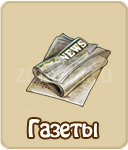

Получено: файл; исходный URL. Получены исходные байты по адресу страницы; идентичность оригинальному домену при замене хоста не подтверждена. Страница: источник.
Газеты
ВКонтакте; данные из ZOMBIA; 20 Декабря 2011, 20:03- Тип
- нет данных
- Покупка
- нет данных
- Продажа
- нет данных
- Как получить
- Накопать в любых зимних декорациях. Особенно хорошо копается в хижине. Также попадается в недостроенном ковре-самолёте. (ВКонтакте, ZOMBIA; требует сверки).
- Применение
- нет данных
- Особенности
- нет данных
- Версия и дата
- ВКонтакте; данные из ZOMBIA; 20 Декабря 2011, 20:03
Данные по источнику · ВКонтакте, ZOMBIA · 20 Декабря 2011, 20:03; дата редакции не установлена
Предварительно: Данные одной исторической фанатской страницы; цифры и подписи изображений требуют сверки. Описание и условия сохранены по колонкам без додумывания.. Требуется сверка.
- Описание материала
- [изображение: Газеты] Стоимость: 650 монет
- Участвует в строительстве
- [изображение: Колизей]
- Как достать
- Накопать в любых зимних декорациях. Особенно хорошо копается в хижине. Также попадается в недостроенном ковре-самолёте.
- Участвует в создании
- нет текстовых данных; возможны неподписанные изображения


Данные по источнику · браузерная социальная версия, Zommbie.at.ua · историческая страница; дата редакции не установлена
Предварительно: Одна страница; независимость от других справочников не установлена. Текст может описывать более ранний патч.. Требуется сверка.
- Места копания
- под зимними декорациями, ледяными глыбами, ковром-самолётом
Данные по источнику · браузерная социальная версия; сеть не уточнена · 10.01.2014 — дата публикации
Предварительно: Исторический фанатский источник, условия могут различаться между версиями и редакциями.. Требуется сверка.
- Где копать
- Под зимними декорациями, ледяными глыбами, ковром-самолётом.
Данные по источнику · браузерная версия; платформа не уточнена · 10.01.2014 — дата в каталоге; дата редакции неизвестна
Предварительно: Фанатская подсказка без вероятностей и уточнения инструмента; требуется проверка версии игры.. Требуется сверка.
- Раскопки по источнику
- Газеты можно накопать в зимних декорациях, в ледяных глыбах, в ковре самолёте.
Связанные сущности
- Школа — упоминается в стадиях или производстве Школы